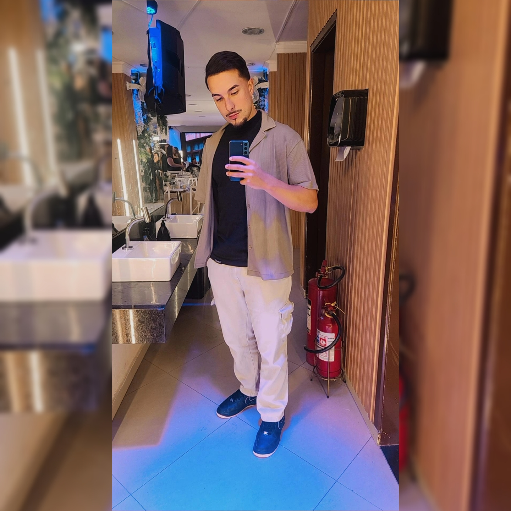
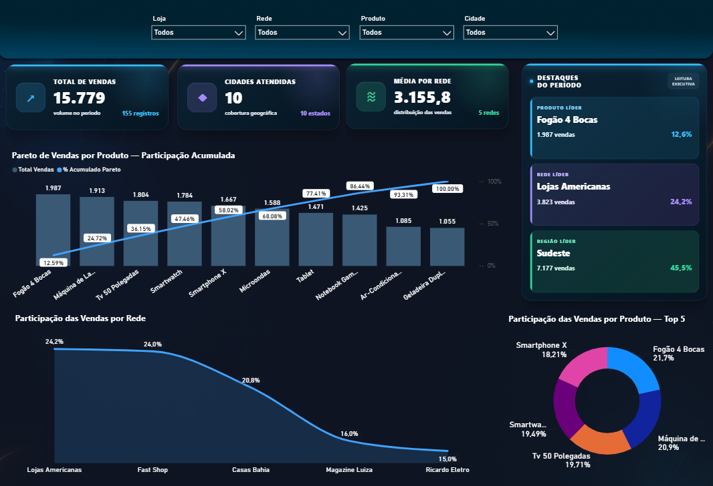

Dashboards executivos
Painéis claros, rápidos e orientados às decisões que realmente importam para a liderança.
Power BIDAXUX analítico
ANALISTA DE DADOS · BUSINESS INTELLIGENCE
Transformo informação em inteligência para empresas que querem enxergar melhor, decidir mais rápido e crescer com confiança.

Eu não entrego apenas gráficos. Construo uma linha confiável entre a pergunta de negócio e a decisão.
Sou Lucas Silva Araujo, profissional de Dados e BI em São Paulo, com mais de quatro anos de experiência. Traduzo necessidades do negócio em modelagem, ETL, indicadores e dashboards executivos — sempre equilibrando precisão técnica e leitura simples.
Posso contribuir dentro de uma equipe de alta performance ou assumir um desafio de consultoria com visão de ponta a ponta.
Para empresas que precisam organizar dados, automatizar processos ou transformar relatórios em instrumentos reais de gestão.
Painéis claros, rápidos e orientados às decisões que realmente importam para a liderança.
Dados organizados, integrados e confiáveis — da origem à camada pronta para análise.
Modelos relacionais e consultas otimizadas para relatórios consistentes e escaláveis.
Rotinas que eliminam trabalho manual e conectam APIs, web scraping, IA e relatórios.
Uma visão executiva de vendas criada para identificar concentração de resultado, desempenho por rede e oportunidades geográficas.

Informações distribuídas por produto, rede, loja, cidade e estado precisavam se transformar em uma leitura executiva única.
KPIs em DAX, análise de Pareto, ranking Top 5, destaques automáticos e filtros contextuais em uma interface consistente.
A liderança passa a enxergar rapidamente concentração, cobertura, produtos líderes e os pontos que merecem ação.
Objetivos, regras de negócio, público e decisões que a solução precisa apoiar.
Fontes, qualidade, transformação, modelagem e indicadores com uma base sustentável.
Dashboard, automação ou pipeline com foco em desempenho, usabilidade e governança.
Validação com usuários, documentação e melhoria contínua conforme o negócio muda.
Atuação prática em projetos de BI, dados e automação para ambientes corporativos.
Dashboards executivos, arquitetura de dados, pipelines de ETL e automações que conectam métricas operacionais, financeiras e de SLA à tomada de decisão.
Integração de fontes no Pentaho, modelagem em SQL Server e painéis operacionais no Power BI para análises estratégicas de desempenho.
Vamos conversar sobre a sua vaga, seu projeto ou o desafio de dados que está travando uma decisão importante.
Iniciar conversa no WhatsApp